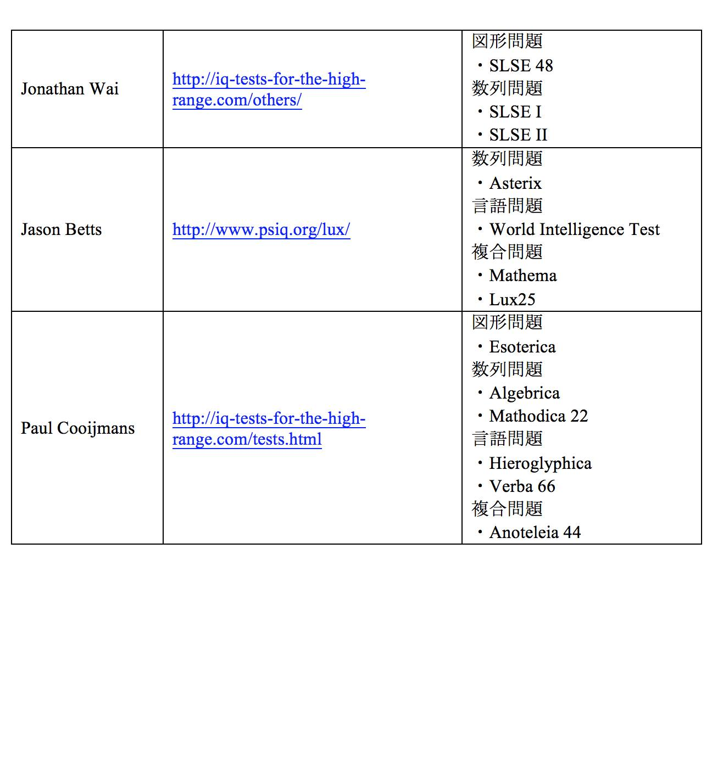

| HELLIQ、METIQ、ISPEに所属する 天才の7つの習慣: 今からでも知能が高まる「習慣化の法則」 | |
| 中村 友彦 | |
| (2019) | |
HELLIQ、METIQ、ISPEに所属する 天才の7つの習慣: 今からでも知能が高まる「習慣化の法則」
中村 友彦
本電子書籍は、購入者個人の閲覧の目的のためにのみ、ファイルの閲覧が許諾されています。
私的利用の範囲を超える転載、配信、送信等の行為、並びに本作品の内容の複製、改変、改ざん等の行為は著作権法上、禁じられています。
本書の情報の理解、使用、実施等の行為の一切の責任は購入者にあり、この情報を使用または実施して損害が生じたとしても著者は一切の責任を負いません。
また、本書を購入者が受け取り閲覧することにより、購入者はこれらに同意したことになります。
本書の内容は著者個人の見解であり、所属する組織の見解を代表するものではありません。
本作品は横書きでレイアウトされています。
また、ご覧になる機種により、表示の差が認められることがあります。
はじめに
本著は、主に「天才」と呼ばれる人の行動パターンを知りたい方や、ご自身の知能を高めたい方、ひいてはやりたいことを実現したい方に向けて書かれています。
また本書は、大学の心理学部や研究機関等で知能の研究をされている方に向けて、実証データや著者の経験談を提供するという副次的な意味合いも含んでいます。
きっと本著を読んでおられる方の中には、「天才の定義とは？」、「『天才』と呼ばれる人の特徴は？」、「どうしたら天才になれるのか」と思われる方が多いのではないかと思います。
それでは、そもそも天才というのはどういう人のことを指すでしょうか。
（１）天才の定義とは
これまでも一世紀以上にもわたり、学際的に「天才の基準」について、世界中で議論がなされてきました。
本書では、その定義について深く掘り下げて議論することはしません。
しかし、天才を定義するにあたり、そもそもIQとは何かについて触れる必要があります。
そもそもIQとは、知能の高さを示す指標です。現代的なIQテストでは標準偏差（データや確率変数の散らばりの度合いを表す数値とお考えください）を用いており、100を平均としています。例えば、一般的な標準偏差15では、IQ130で上位2％ の知能があることを示します。
ちなみにあなたは、MENSA（メンサ）という高知能団体をご存知でしょうか。
宇治原史規氏や茂木健一郎氏などの著名人も所属し、ここ数年でメディアを通して有名になり認知度も上がった高知能団体であり、特に本書をご覧になる方はすでにご存知の方が多いことかと思います。
そのMENSAの入会基準も、IQ130（標準偏差15）です。
そして、このIQが高いほど、知能指数が高いことを意味します。反対にIQが低いと、知的障害などの可能性が疑われます。
発達障害を持つ人は、知能の発達や状態に特徴があるため、発達障害の診断の際にも知能検査を用いられることが一般的です。
ここまで、IQについてお話してきました。それでは、天才とはどの程度IQが高い人のことを指すのでしょうか。
一般的に、大人の平均的なIQは100、天才のIQは140（ともに標準偏差15）以上と言われています。
1916年に、アメリカの心理学者ルイス・マディソン・ターマン氏によって発表された、世界的に有名なスタンフォード・ビネー法の知能検査によれば、「普通（normal）」あるいは「平均（average）」はIQ100、「準天才（near genius）」あるいは「天才（genius）」はIQ140以上と定義されています。1
そのため、便宜上本書では、ターマン氏の基準を採用し、「天才」を「IQ（知能指数）が140以上の人」と定義しています。
ちなみに、メディア等によれば、東大生の平均IQは120と言われています。
それのIQ分類を見やすくまとめたものが以下となりますので、ご参考にしてください。
-
Lewis M. Terman,The Measurement of Intelligence (Cambridge, MA: The Riverside Press, 1916), 44, accessed March 19, 2019, https://psychaanalyse.com/pdf/THE_MEASUREMENT_OF_INTELLIGENCE.pdf.⏎
（２）天才の７つの習慣とは
私は、知能検査の結果、IQ170（標準偏差15、メディア的には標準偏差24のIQ212)でした。統計では約65万人に1人の出現率です。
世界的に著名な天才を公的に発表するWorld Genius Directory（WGD） にも、2019年4月現在で世界高知能者トップ100に掲載されています。
これまで私は、様々な場面で自分のIQの高さに悩み、弊害を感じ、苦しんできました。それは、学校あるいは職場等で、モノの捉え方や考え方についての周りとの違いから、周りの人々に理解されないとういことが多かったからです。
そんな中、30歳を過ぎて知能検査を受け、自分のIQが大人の平均と言われる100を遥かに超えて高いことを知り、またそれ以上に、それが数十年にわたる自身の苦しみの原因の大部分であったことに気づき、自己認識が高まったとともに、とても慰められました。
もちろん、1人の人間は、本書のテーマである知能や知性だけでなく、理性や感性など複合的な要素によって成り立っています。
したがって、知能の高低に囚われすぎて、それを偶像化することも避けなければならない大きな課題だと思っています。
しかしながら、その自己認識により、何がこれまで私自身を形成してきたか、いわば「天才を天才とせしめるもの」は何かを私は見出したのです。
そしてさらに、それを数々の世界的な科学的研究と照らし合わせ、その効果の妥当性や信頼性を検証してきました。
そうして生まれたのが、私がこれまで実践してきた「7つの習慣」です。
本書では、誰もが実践できるその習慣と実証例、おすすめの実践法をご紹介しています。
その7つの習慣がこちらです。
① 「１人の時間を大切にする」
② 「責任感を持つ」
③ 「創造性を磨く」
④ 「多様性を受け入れる」
⑤ 「物事を深く分析する」
⑥ 「運動をする」
⑦ 「外国語を学ぶ」
これら7つの習慣を複合的に行うことにより、効率よく知能を向上する訓練をすることができます。
そのイメージが下の図となります。これを用いて、本書の各章の習慣の位置づけを確認してください。
（３）知能向上への「カギ」
2019年現在、世界77億人もいる中で、「天才」と呼ばれる人は数多くいます。
そして、私自身は、その中のたった1人でしかありません。
また、私は医療や知能指数の専門家でもなく、実際に被験者を用いた実証データもありませんので、これらを実践すれば必ず知能が高まる、といったものでもありません。
しかし、本書を読み進めることで、あなたは「天才の習慣」を垣間見ることになります。そしてそれは必ず、あなたが知能向上を探求する上での大事な「カギ」となり得ます。
本書にあるこの7つの習慣を知り実践することで、IQに対するあなたの知識が深まり、あなたご自身の知能と能力が向上し、さらにはあなたがやりたいことを実現することができるよう、心からお祈りしています。
第１章 １人の時間を大切にする
➪「自分の世界観を確立」
（１）１人の時間を大切にすることとIQの関係
あなたは、1人で時間を過ごすことが好きですか？それとも、友達と時間を過ごすことのほうが好きですか？
その答えは、あなたが外向的か内向的かによっても変わってきます。あなたは、外向的なほうですか、それとも内向的なほうですか？
一般的に、人は気が置けない友人や仲間と過ごすことを大事にします。もちろん、私も例外ではありませんし、特に大事な友人と過ごす時間は私にとってかけがえのないものです。
しかし、1人だけの時間を大切にすることもまた重要です。それはセルフケアや自己啓発などの目的で行われるかもしれません。
そして、そのように1人だけの時間を大切にすることとIQには、相関関係があるとされています。
ロンドン・スクール・オブ・エコノミクス（LSE）准教授であるサトシ・カナザワ氏、およびシンガポールマネージメント大学准教授であるノーマン・P・リ氏は、彼らの行った研究の中で、「知能が低い人は、仲間と過ごせば過ごすほど、人生に対する満足度が高まる一方、知能が高い人は、同様に仲間と過ごせば過ごすほど、人生に対する不満が募る」ことを発見しました。1
本研究では、約15,000人の18〜28歳の若者を対象に、知能、人口密度、友人関係が現代の人生に対する満足度に与える影響を調査しました。
その結果、最も顕著だった傾向は、知能が低い人は、仲間と時間を過ごせば過ごすほど満足度が高まる一方、知能が高い人は、それとまったく反対の結果を示したことでした。
つまり、高知能者は、仲間と時間を過ごせば過ごすほど、不満足度が高くなっていったのです。
それにはいくつかの理由が考えられますが、最も分かりやすいものは、高知能者は他人とのコミュニケーションを自身の目的を達成する上での障壁と捉えやすく、結果的に、他人と話すよりも1人の時間を自分の思考に没頭することを好むことが挙げられます。
そのため、高知能者、他人や社会とのつながりを保つのが大変と言われています。
しかしながら、気の置けない信頼できる友人を持つことは、知能の高低に関わらず、人生において非常に重要なことであることも確かです。
したがって、自分1人の時間をより長く取って、他人と過ごす時間を疎かにしたりする必要はありません。
何事も、バランスが大事です。
ここでは、1人の時間を大切にすることはIQと相関関係がある、とだけ理解していただければ大丈夫です。
-
Norman P. Li and Satoshi Kanazawa, "Country Roads, Take Me Home... To My Friends: How Intelligence, Population Density, and Friendship Affect Modern Happiness,"Singapore Management University , November 2016, accessed March 20, 2019, https://ink.library.smu.edu.sg/cgi/viewcontent.cgi?article=3167&context=soss_research.⏎
（２）１人で楽しめることを見つけ、楽しむ
心理学の世界では、外向的な人は周りの人といることでエネルギーを得る一方で、内向的な人は周りの人といることでエネルギーを消耗してしまうとされています。
そのため、外向的な人は1人の時間を心地良くないと思う傾向が高い一方で、内向的な人は自然と1人の時間を大事にする傾向があります。
ですから、「1人の時間を大切にすること」の位置づけは人によって異なり、一概にどの程度自分の時間を大事にすれば良いかなどの正解はありません。
また、「何を」すべきかについての基準もありません。
言い換えれば、自分がそれをして楽しめることでれば、何でも良いのです。
あなたは、何をしている時に一番楽しいと感じますか？
読書、散歩、旅行、何でも構いません。
どうぞ、あなた1人で楽しめることを見つけ、それを楽しんでください。
そして、あなたが見つけたその場所で、何かに没頭することは、あなた自身の世界観を確立することにつながるのです。
世界観とは、あなたが世界をどのように見て理解するかといった、いわばレンズのようなものです。
もちろんそれは、1人の時間だけでなく、他人との関わりの中でもともに養成されていくものです。
しかし、1人の時間を大切にすることは、自分の中で「確固たる揺るぎない何か」を持つことの手助けになります。
したがって、あなたが何かに没頭できるモノや場所を見つけることは、とても大事なことなのです。
しかし中には、自分にはそんなモノや場所はない、と思われる方もおられるでしょう。
そんな方は、昔を思い出してみてください。
あなたが子供の頃、無邪気に公園で遊んだり、家でゲームをしたりして、楽しさのあまり、知らず知らずのうちに時間を忘れてしまった経験はありませんか。
そのような、「あなたがあなた自身でいられる場所」を持つことは、特に大人になってからも、人生という荒波の中で、自分というボートをしっかり持ち、運航していくのにとても重要なことなのです。
あなたがあなた自身でいられるその居場所を見つけ、それを楽しみながら、あなたの世界観を確立していきましょう。
（３）自分の世界観を確立するために
これまで私が「1人で楽しんできたことのリスト」をご紹介します。
これらの1つ1つが、私の世界観を形作ってきました。
まずは、分かりやすく表にまとめたこちらをご覧ください。

折り紙
私は、子供の頃によくおばあちゃんに折り紙とあやとりを教わっていました。
そのため、5歳くらいで折り鶴の作り方を覚え、おばあちゃんの99歳の誕生日には、1人で3ヶ月かけて千羽鶴を作ってプレゼントしました。その時のおばあちゃんの喜んだ顔は、今でも覚えています。
あやとり
また、同じく5歳くらいであやとりを覚え、10歳までにはハシゴやハサミなど色々な形を作ったり、1人あやとりが自然にできるようになりました。
RPGゲーム
私が10歳の時にゲームソフトのドラゴンクエストにハマり、毎日のようにプレイしていました。RPGということもあり、自分が主人公となって冒険していくことがとても楽しく、クラシック調の音楽も心地よかったです。
ちなみに、本書では詳しく言及していませんが、小さい頃からクラシック音楽を聴くことも、知能を高めるのに大変良いと科学的に判明しています。私の知り合いで、国立大学を卒業して国家公務員になり活躍している方も、クラシック音楽を幼少期から大人になるまで好んで聞いていたと言っていました。
音楽や歌が知能向上に役立つことは、第３章「創造性を磨く」のセクションで詳述しています。
ドラゴンクエストシリーズ、さらにはクロノ・トリガーも、私の中では、内容、ストーリー性、音楽の面において、最高のゲームです。
これらのRPGゲームをすることで、「自分の人生の主人公は自分自身である」、「冒険や人との出会いを繰り返していく上で、人は成長していく」という世界観が、知らず知らずのうちに私の心に根付いたように思います。
ヨーヨー
私が12歳の時、ハイパーヨーヨーが流行っていて、年上の従姉妹にデパートで「ハイパーブレイン」というヨーヨーを買ってもらいました。
その後はヨーヨーにハマり、勉強はそっちのけで、四六時中練習をしていました。練習時間は1日8時間以上、それを2年間続けました。
大会にも出て、1998年関東大会優勝、1999年ジャパンヨーヨーコンテストシニア部門で2位になりました。
今でもヨーヨーは続けていて、友人の子供の誕生日会やその他イベントの余興などでフリースタイルのパフォーマンスをしたりしています。
英語
また、英語は中学校から義務教育で学び始めました。これはもう趣味とでも言いますか、英検を受けたり、TOEICを受けたり、スピーチコンテストに出たりと、楽しいからずっと続けていました。
今では、英語翻訳家として働いていますので、我ながら、本当に、「好きこそものの上手なれ」だなぁと思います。
ギター
また、私は19歳の時に友達からギターを教わりました。その後はアコギにハマり、必死になって弾き方を覚えて弾き語りなどをしていました。
このように、折り紙、あやとり、ヨーヨー、ギター、と、手や手の指を動かす項目を4つご紹介してきましたが、これらの手の運動は、頭の働きを活性化するのにとても良い訓練とされています。
英国の知能専門家であるフィリップ・カーター氏は、その著書『知能検査の完全書』の中で、指を動かすことは脳を刺激し、知能を向上させると述べています。1
そのため、指を動かすもの、例えばピアノなどの楽器演奏や作品などのモノづくりなどでも良いでしょう。
特に若い頃から始めるのが良いですが、始めるのに遅いことなど何もありません。
読書
読書は、ギターと同じく19歳の頃に没頭し、それ以降は年間で数十冊読むのはあたりまえ、また特に好きな作家の本を読み続けていました。
特に若い頃は、村上春樹、貴志祐介、遠藤周作、北野武、江國香織の著書を片っ端から読破していました。
水泳
そして25歳の頃に水泳を始め、これは10年以上経った今でも続けています。これは、私にとって定期的なセルフケアの意味合いで非常に重要です。
これまで、私が1人で楽しんできたことのリストをご紹介してきましたが、あくまでもこれは参考ですので、必ずしもこれらをしなければならないわけではありません。
繰り返しますが、あなた自身がそれをして楽しめ、リラックスでき、あなた自身の世界観を確立することにつながることが、一番良いことなのです。
どうぞ、ご自身が1人で楽しめる何かを見つけ、それをやり続けることを習慣化することで、あなた自身の生活のリズムや世界観を発見してください。
-
Philip Carter,The Complete Book of Intelligence Tests: 500 Exercises to Improve, Upgrade and Enhance Your Mind Strength (West Sussex, England: John Wiley & Sons Ltd, 2005), 2, accessed March 20, 2019, http://elibrary.bsu.az/books_rax/N_357.pdf.⏎
コラム１ ハイレンジIQテストとは
あなたは、「ハイレンジIQテスト」という言葉をご存知でしょうか？ハイレンジIQテストとは、知能検査（IQテスト）の一種です。
知能検査には大きく3種類あり、ハイレンジIQテストはそのうちの1つという位置づけです。
① 医療機関や医師、臨床心理士などの専門家の判断のもとで行うもの（WAIS、WISCなど）
② ネットで簡易的に受けられるもの（無料で受けられるものを含む）
③ ハイレンジIQテストと呼ばれるもの
このうち、① のWAISやWISCと呼ばれるウェクスラー式知能検査は、児童期や成人期において最もよく使われる知能検査の1つです。ウェクスラー式知能検査は、1938年刊行のウェクスラー・ベルビュー知能検査を始まりとする、70年以上の歴史を持つ知能検査であり、一般的に、知的障害や発達障害の診断材料の1つとして用いられます。
ただ、こちらの検査を実施する際、保険が適用されない場合は多くの費用がかかること、またそれ以上に、例えばWAISではIQ40〜156の範囲でしか測定できないことなどのデメリットがあります。
また、② のネットで簡易的に受けることができるIQテストは、世の中に溢れています。中には、「あなたのIQは300です！」などと結果を表示してくるものもあります。
私は、この方法はまったくオススメしません。それは、それらの多くのものは実証データに乏しいだけでなく、テストの受験者数データなどの統計も曖昧で、テスト自体の信頼性が非常に低く、そもそも受験すること自体が単なる時間の無駄に過ぎないからです。
③ のハイレンジIQテストとは、高知能者向けに作られた実験的なIQテストのことです。
ハイレンジIQテストの特徴については、次項でより詳しく説明します。
（１）ハイレンジIQテストの特徴
WAISやWISCなどの医療機関で受けられるテストや、ネットで簡易的に受けられるテストと比較して、② のハイレンジIQテストとは、主にIQ130以上の高いIQ値を測定するために、高知能者向けに作成された実験的な知能テストです。
特に① のWAISやWISCとは異なり、ハイレンジIQテストの結果には科学的根拠がなく、結果はあくまでも目安として考えられています。
ハイレンジIQテストには、図形系のテスト、数列系のテスト、言語系のテストの3種類があります。受験者は、これらのうちどれか1つを選んで受けることになります。
そして、ハイレンジIQテストの主な特徴としては、
① 問題がインターネット上に公開されている。
② 時間制限がない。
③ 何回でも受験できる。（テスト作成者の判断による）
という3点です。
1点目については、テスト作成者（通常は、テスト採点者と同一人物）がテスト実施を中断するか解答の受付を締め切らない限り、問題はネット上に公開されていますので、誰にでも受験資格があるということです。
2点目の時間制限がないという点ですが、それでは誰でも高得点を取れてしまうのではと疑問に思われるかもしれません。ハイレンジIQテストそのものの信憑性や妥当性に疑問を投げかける人の多くは、この点を指摘しています。
しかし、一度ご覧いただけば分かりますが、テストの難易度は非常に高く、誰もが高得点を叩き出せるというものではありません。中には、問題が公開されてから20年以上経っても未だ満点獲得者が出ていないテストも存在します。
3点目については、多くのハイレンジIQテストで、複数回の受験が許可されています。2回目の提出の際には、1回目の自身の解答の正誤を見直せるため、通常1回目より2回目のほうが点数が高い結果となることが多いです。一方で、公平性を期すため、1回目のスコアのみを正式なものとして認めるテスト作成者や高知能団体も多いです。
（２）ハイレンジIQテストの受験方法
基本的に、以下の流れとなります。
① 受験したいテストを選択し、自分が納得いくまで時間をかけて問題を解く。
② 受験料を支払い、Eメールで答案を提出する。
③ テスト採点者からスコア結果が送られてくる。
④ 正解数をNorm表（正解数をIQ値に換算する表のこと）で照らし合わせ、自分のIQ値を確認する。
受験料の支払いについて、多くのテスト採点者はPayPalと呼ばれる方式を使っています。そのため、まだそのアカウントをお持ちでない場合は、あらかじめ作成しておくと良いでしょう。
また、多くの場合、不正防止のため、採点者によってパスポートや運転免許証などの身分証明書のコピーの提出が求められますので、驚かないようにしましょう。
（３）ハイレンジIQテストの問題点
これらのハイレンジIQテストの中には、アーカンソー大学心理学部準教授であり心理学博士でもあるジョンサン・ワイ氏が作成するSLSEシリーズ（巻末の付録参照）など、信頼性の高いテストも存在する一方で、多くは知能検査の専門家でない個人によって作成されています。
したがって、これらのテストは高度な思考力を図っている一方で、WAISなど医療機関で行われる検査と比較して、科学的根拠はありません。
また、ハイレンジIQテストは、先述の通り高知能者向けに作られたということもあり、全体受験者数も少なく、世界的に評価の高いハイレンジIQテストでも受験者数はせいぜい数百人程度のため、データとして実証するためのサンプル数が不足しており、IQ値としての信頼性も高くはありません。
これらの理由から、ハイレンジIQテストによるIQ測定は、あくまでも目安としてお考えください。
（４）ハイレンジIQテストのススメ
このように、ハイレンジIQテストには、科学的根拠がない、実証のためのサンプル数が少ないといった問題点があることも事実です。
しかしながら、多くのハイレンジIQテストは、自身が高知能を持つ方たちによって、非常に精巧に作られています。
そのため、もちろん向き不向きもありますが、問題やパズルを解くのが好きな方には、テストを解くこと自体がとても面白く感じられることでしょう。
さらに、世界中の他のテスト受験者とスコアを競ったり、高知能団体に所属して他の会員との関わりを持ったりするといった楽しみもあります。
それに加えて、2019年現在で最もIQが高いとされ（IQ198、標準偏差15）、医学博士であり精神科医でもあるギリシャのエヴァンゲロス・カツイオウリス氏によって、国際高知能者組織であるワールド・インテリジェンス・ネットワーク（WIN）が設立されるなど、世界中でハイレンジIQテストに対する理解への気運は高まってきています。
さらに日本でも、現慶應義塾大学SFC研究所所員かつJAPAN MENSA会員である幸田直樹氏によって、他の先進諸国に比べて極端に高IQ団体が少ない日本の現状を鑑み、高知能者の交流の場を提供する目的から、高IQ団体であるMETIQ が設立されるなど、ハイレンジIQテストへの理解の動きは徐々に高まりつつあります。
直近では、太田三砂貴氏が、今年3月11日に放送されたTBSの番組「1番だけが知っている」にIQ188の天才として出演して、メディアで大変話題になりました。
実はその太田氏も、ワイ氏のSLSE48というハイレンジIQテストを受験して、IQ188（標準偏差16）を叩き出したのです。1
つまり、メディアも暗示的にハイレンジIQテストの妥当性を認めていることが分かります。
仮にそうでなければ、ここまで明示的に太田氏のことを大々的に取り上げなかったでしょう。
これらのメディアへの露出等を通して、よりIQや高知能者に対する人々の理解が深まり、彼らがその能力を発揮し活躍できる社会制度が整備されることを切に願っています。
なお、世界的に有名なハイレンジIQテストと作者一覧については、本書巻末の付録でご紹介していますので、そちらをご覧ください。
これらの問題を見て興味が湧きましたら、ぜひテスト受験にチャレンジしてみてください。
-
The World Genius Directory,The World Genius Directory Geniuses , accessed April 8, 2019, http://psiq.org/world_genius_directory_geniuses/geniuses.htm.⏎
第２章 責任感を持つ
➪「自分に厳しく」
（１）責任感の強さとIQの関係
あなたは、責任感が強いほうですか、それとも弱いほうですか？
何か物事を推し進める時、それを最後までやり遂げようと最善を尽くしますか、それとも途中で妥協点を見出そうとしますか？
責任感の強さとIQには強い相関関係があると見られています。
ノルウェーの疫学者らは、彼らの行った研究の中で、第二子以降の子供に比べて、第一子がより高いIQを持つことを発見しました。1
本研究では、約240,000人の18〜19歳の若者を対象に、両親の学歴、出産時の母親の年齢、家族の大きさなどを含むIQに影響を与えうる要素を考慮し、被験者の知能や出生時の順番、また健康状態を調査しました。
その結果、最も顕著だった傾向は、第一子の平均IQは103.2、第二子は100.3、第三子は99を示したことでした。言い換えれば、第一子と第二子の平均IQの差は約3、第一子と第三子の平均IQの差は4もあったのです。
それにはいくつかの理由が考えられますが、最も分かりやすいものは、第一子は第二子以降の子に比べて責任感が強い傾向が高いことが挙げられます。
さらに、他の研究では、妹や弟が、第一子であるお兄さんやお姉さんを、より責任感が強く、自制心があり、向上心があると表現する傾向があるとしています。2
このように、高知能者は、往々にして常に責任感、向上心や好奇心があり、「自分の実力はまだまだこんなものではない」、「まだまだ自分は成長できる」と思う傾向が強いのです。
そのため、彼らは学習欲や知識欲があるほか、収入増やキャリアアップ、さらにはより良い人間関係や人生における意義を求めます。
一方で、それと同時に、彼らは周りからプレッシャーを感じます。さらに、彼らは自分自身にもプレッシャーを課し、それは日々の色々な場面で顕著に現れます。言うなれば、高知能者とは自分に厳しい人なのです。
高知能者は、このように高い理想を持ち、理想の自分を思い描きつつも、現実の自分と比較してしまいます。
そのため、現実の自分とその理想の自分の違いを見つけた時、彼らは自分自身を責めてしまうのです。
したがって、高知能者は、ストレスが絶えないのです。
（２）何事にも責任感を持ってこなす
ここまで、責任感の強さとIQには強い関係があることをご理解いただけたのではないでしょうか。
先述の質問で、自分は物事が長続きしない、または責任を持って取り組めないと思うと答えた人でも、諦めることはありません。
なぜなら、これからあなたの人生で起こる色々な場面において、1つ1つしっかりこなしていくよう意識して生活すれば良いからです。
繰り返します。始めるのに遅いことなど、何もありません。
例えば、あなたが来週までにやらなければならないレポート作成や、プレゼン資料の作成など。または、日々の学校の宿題や仕事の業務など。さらには、家事の手伝いなど。
色々な場面で、責任を持ってしなければならないことは、人生において山ほどあります。
そして、先に伸ばせば伸ばすほど、やるべきことリストがどんどん後倒しされ、無駄にストレスを感じてしまいます。
そのため、責任感を持つ一方で、ストレスを溜めないコツとしては、前のめりで物事に取り組むということです。
その際に手助けになるのが、スケジュール管理です。
（３）スケジュール管理の秘訣
責任をもって物事を行っていくと意識したら、それを具体的なスケジュールに落とし込んでいきます。
そうすることで、やることリストを日・週・月単位で記入して可視化し、効率的かつ能動的に自分のスケジュールの把握と実行をしていきます。
その際にあるととても重宝するのが、プランナー（手帳）です。
最近はスマートフォンやアンドロイドで操れるLifebearなどのクラウド型電子手帳アプリなども市場に浸透し、これらを使用すれば誰でも簡単にスケジュール管理ができます。
一方で、まだ紙媒体の手帳を好む学生や社会人も多いです。
そのため、色々なプランナーを試して、自分に合ったものを見つけると良いでしょう。
ご参考までに、私が22歳の頃、ビジネスで月数百万を稼ぐほど大成功している先輩がいました。その先輩にビジネス成功の秘訣を聞いたところ、彼は、「フランクリン・プランナーがあるから、そのおかげで成功した」と断言していました。そして彼は、私にもそれを使い始めることを勧めたのです。
先輩の提案を受けて、22歳からかれこれ10年以上ずっとこれを使っています。
私は決してフランクリン・プランナーの回し者ではありませんが、フランクリン・プランナーを使用すると決めたことは、人生の中で最も重要な決断の1つと言っても過言ではありません。
何と言っても、これが私にとってのスケジュール管理の大秘訣なのです。
なぜかというと、細かくやることリストを日・週・月・年単位で設定かつ可視化でき、ゴールまでのスケジュールや、ゴールから逆算した日単位でのスケジュールへの落とし込みが非常に分かりやすくできるようになる からです。
先述の私の知人の他にも、フランクリン・プランナーを活用して短・中・長期的なスケジュール管理と目標管理をし、ビジネスを円滑に進めている大企業の採用担当の知り合いなどがいます。
ただ、あくまでも人によって合う方法は異なりますので、どの方法が自分にとってベストなものか、実際に比較検討してみると良いでしょう。
あなたが責任感を持って物事を進めていく上で、どうぞプランナーを大いに活用してください。
そして、これらを習慣化することで、物事の進め方を効率化し、向上心を高め、あなたの目指す目標の達成に役立ててみてください。
コラム２ IQは変化するのか？
本書は、「IQは変化する」という命題あるいは前提をもとに執筆されています。
IQが変化するか否かについては諸説あり、専門家の中でも意見が分かれるところです。
一般的に、以前はIQは一生涯変わらないものと考えられていました。
しかし最近では、医学の発展により、IQも脳の変化にあわせて変化することが判明しています。
その例として、2011年に英ユニヴァーシティ・カレッジ・ロンドンの研究チームは、これまで一生変わらないと考えられてきたIQが、10代で大きく変化することが分かったと、英科学誌「ネイチャー（Nature）」に発表しました。1
本研究では、33人の十代の被験者を対象に、彼らのIQの変化を数年間にわたり測定し、評価しました。
本研究によれば、このIQの変化は脳の構造の変化に由来しているとしています。
さらに、IQは成人してからも脳の構造の変化によって変化する可能性があり、本研究チームはさらにその研究を続けるとしています。
同様に、コーネル大学心理学教授であるスティーブン・セシ氏もまた、IQの向上は可能性があるものだと断言しています。Live Scienceに投稿された彼の記事によれば、彼は、「人生の経験や学校での経験の両方が、脳とIQを変化させ、それは子供でも大人でも同様である」としています。2
そうです。あなたのIQも、これからも上がる可能性があるのです。
ですから、どうかあなたも、本書を大いに活用して、IQ向上を目指してください。
-
Ed Yong, "Teenagers' IQ Scores Can Rise or Fall Sharply during Adolescence,"The Guardian , October 19, 2011, accessed March 27, 2019, https://www.theguardian.com/science/2011/oct/19/teenagers-iq-scores-adolescence.⏎
-
Lauren Cox, "5 Experts Answer: Can Your IQ Change?,"Live Science , February 9, 2012, accessed March 27, 2019, https://www.livescience.com/36143-iq-change-time.html.⏎
第３章 創造性を磨く
➪「創造性の開放」
（１）創造性とIQの関係
あなたは、色々と物事を想像したり、創造的に物事を考えたりするほうですか？
ジョージア工科大学の脳科学研究では、想像することと脳の効率の相関関係が示されました。1
本研究は、100名以上の被験者を対象に行われました。
本研究で、彼らは何かに5分間集中するよう促され、その間、彼らの脳は、MRIによりモニタリングされました。
その後、彼らは知能指数と創造性を計測するテストを受けさせられました。
その結果、これらのテストのスコアが高かった人たちは、テストの最中、頻繁に空想にふけっていたことが判明しました。
本研究を共同実施した同大学心理学准教授のエリック・シュマカー氏は、「効率性の高い脳を持つ人は、脳の能力が高すぎるため、彼らの持つ創造性を止めることはできない」と述べています。
このように、創造性とIQには、強い相関関係があるのです。
-
Jason Maderer, "Daydreaming is Good. It Means You're Smart: Brain Study Suggests Mind Wandering at Work and Home May Not Be as Bad as You Might Think,"Georgia Institute of Technology , October 24, 2017, accessed March 30, 2019, https://www.news.gatech.edu/2017/10/24/daydreaming-good-it-means-youre-smart.⏎
（２）創造性を磨き活かせる場所を見つける
さて、あなたは、どんな場所であなたの創造性を活かしていますか？
日々忙しい毎日の中では、創造性を磨く場所、またそういった場所を見つける重要性すらも認識できる機会が中々少ないかもしれません。
しかし、創造性はあなたのIQと強いつながりがあるのです。
したがって、あなたが楽しみながらあなた自身の創造性を活かせる場所や機会を見つけることが、非常に重要になってきます。
それでは、そのような場所をどうやって見つけたら良いのでしょうか。
まず、自問自答してみてくださし。あなたは、何が好きですか？何をしている時に、時間を忘れるほど没頭できますか？
もしかしたら、それは些細で取るに足らないものと思われるかも知れません。
しかし、自分を卑下することなく、どうかあなたの好きなことを見つけてください。
それは、趣味であっても構いません。例えば、絵を書いたり、歌を歌ったり、日記を書いたり、そういったことでも十分良いのです。
例えば、私の友人は絵画が好きで、それを仕事としています。また他の友人は歌が好きで、YouTubeに自分の歌の動画をアップロードしたりしています。
一番大切なことは、あなた自信が楽しめ、あなた自身の創造性を開放し掻き立てることができるものや場所を発見することなのです。
（３）クリエイティブに生きることの実践
私は、クリエイティブに生きることは、より意味のある人生を送るために、とても重要なことだと思っています。
クリエイティブに考え行動していくことによって初めて、あなたの個性が発揮され、さらには潜在能力が開放されるからです。
歌
私の伯母さんは詩吟の師範で、小さい頃に伯母さんの家に遊びに行っては、よく彼女の歌声を聞いていました。
力強い彼女の歌声の中にも、存在する静寂。言葉では表現できないような躍動を感じたのを覚えています。
ギター
大学生になり、私は19歳の頃に友人の影響でギターを始め、路上で弾き語りをよくしていました。
当時の一番のお気に入りは尾崎豊で、アルバムを買っては聴きまくり、ギターで練習し、街に繰り出しては弾き語りをしていました。
実は私は、プロの歌い手を目指していたのですが、正直なところ、自分の才能がないことに気づき、途中で断念しました。
しかし、24歳の頃、「歌うことで大事なのは、どれだけ歌が上手い下手かなんかではなく、自分がいかに歌うことを楽しめるか」 ということを、ギター弾き語りで全国47都道府県を渡り歩いた先輩から諭され、その時から、周りの人の評価などは気にせず、ただ歌うことを純粋に楽しむことができるようになりました。
堅苦しく考えず、まず楽しむこと。それを意識し始めたところ、自然に肩の力が抜けて、歌を楽しめたことを覚えています。それとともに、「型にはまる必要などない」という意識も生まれ、必然的に創造性が開放される感覚を覚えました。
そして、それは今でも同じです。
もしご興味があれば、弾き語りの曲を私のYouTubeチャンネル「Tomo Music 」にアップロードしていますので、ご覧ください。洋楽・邦楽色々な曲を歌っています。
将棋
私が小学校4年生の頃に、父親から将棋を教えてもらいました。それから将棋にはまり、父親を掴まえては、毎日のように将棋を指していました。
また、伯父さんが将棋教室の師範だったこともあり、升田幸三の将棋戦法本を20冊以上もらって、紙に穴が空くほど読み返していました。
将棋は、ご存知のように色々な「囲い（守り）」と「戦法（攻め）」があり、それらを駆使して相手の王を取ることを目的にしたゲームです。
そのため、もちろん基本的な囲いや戦法は初めに学ぶのですが、それ以降は本当に分析力のみならず創造性をも駆使して戦っていくことになります。
したがって、将棋をすることは、必然的に創造性を高めることにつながります。
例えば、私は特に新しい戦法を考えたり奇抜な戦法を使ったりするのが好きで、「嬉野流（また、それをさらに変化させた嬉野流中飛車）」や「つくつくぼうし戦法」を好んで使っています。
これもまた、創造性を発揮することの訓練になるのです。
さらに、これは私だけではなく多くの将棋を指す方々に言えることかもしれませんが、将棋の対局をしている間は、頭が「空想にふけっている状態」になります。例えば、今日の夜ご飯や明日の旅行のことなどを、対局中に考えているのです。そして、そのほうが、より集中して、より局面が読めたり、より良い一手が打てたりするのです。
「好きこそ物の上手なれ」とはよく言いますが、私は将棋が大好きで、小学校のゲームクラブ部長、高校の棋道部部長を務めたり、日本将棋連盟アマチュア三段取得、全米将棋選手権大会でB級優勝したりしました。
本当に、将棋とは長い付き合いです。
このように私は、創造性を働かせる媒体として、歌と将棋を用いてきましたが、もちろん他の方法でも構いません。
どうぞあなたも、ご自身が楽しめて、かつ創造性を掻き立てることができる趣味や物事を見出し、それを習慣化することで、IQの向上に役立ててみてください。
コラム３ IQテストの種類は３つ
あなたは、IQテストには大まかに3種類あることを覚えていますでしょうか。
そう、コラム１のハイレンジIQテストの欄でもご紹介しました通り、「数列系」、「図形系」、「言語系」ですね。
それでは、それぞれの特徴を以下に説明していきます。
まず、「数列系」（Numerical）のテストとは、数列からある規則性を見出すものです。
簡単なものですと、例えば
1, 4, 9, ?, 25
このうち、?に入る数字は何かを問うようなものです。（あえて答えは提示しませんので、どうぞ正解が何かをお考えください。）
次に、「図形系」（Spatial）のテストとは、数列と同様、複数の図形の中から、パターン等の規則性を見出すものです。
例えば、
□, □□, ?, □□□□
このうち、?に来るべき図形はどれかを問うようなものです。
最後に、「言語系」（Verbal）のテストとは、言語を用いた知識問題や類推問題などで、いわば受験者の思考力の高さを見出すものです。
同じく例を挙げると、
西：東＝左：？
このうち、?に入るべき言葉を答えるものです。
さらに、1つのテスト内でこれらのうち2つ以上が混在しているものを「複合系」（Mixed）テストと呼んでいます。
基本的に、人には向き不向きがあり、図形を得意とするが数列が苦手な人、言語を得意とするが図形が苦手な人、まれにオールラウンドですべてが得意な人など、本当に色々な人がいます。
ちなみに著者は、数列と言語は得意ですが、図形はあまり得意ではありません。
あなたは、どの種類のテストが得意ですか？
自分の得意なテストの種類を発見することは、IQテストを受ける上で、より高い値を出すための手助けとなります。
どうぞあなたも、ご自身のIQテストの得意分野を見出してください。
第４章 多様性を受け入れる
➪「自他の理解」
（１）多様性の受容度とIQの関係
あなたは、多様性を受け入れることとIQに関係があることをご存知でしたか？
高知能者は、人種・文化背景や考え方の異なる人と接した時、自分の正当性を相手に押し付けたり、意固地にはなったりはしません。
そういう時、彼らは、別の考え方を探そうとしてみたり、その他の視点を理解して知ろうとしてみたりします。
ハーバード大学経済学教授であるリチャード・フリーマン氏は、1985年から2008年にかけて、150万もの研究文献の著者らの民族的・地理的アイデンティティを調査しました。1
その結果、より多様性のあるグループに属する著者の文献は、同質的なグループに属する著者の文献よりも、高いレベルかつ影響力があるものであることを示しました。
同様に、高知能者は、何か選択を迫られた際、異なる様々な意見や状況を熟考した後、自分が賛成する意見を慎重に選び、その是非も理論的にまとめていきます。
つまり、高知能者は、自分の意見を他人に押し付けようとせず、むしろ他人の意見を尊重して理解しようとします。
それは、自分が常に正しいと思い続けることの傲慢さ、また人を変えようとすることの無意味さを、高知能者は知っているからです。
したがって、多様性を受け入れることは、IQと非常に強い関係があるのです。
-
Katherine W. Phillips, "How Diversity Makes Us Smarter: Being around People Who Are Different from Us Makes Us More Creative, More Diligent and Harder-working,"SCIENTIFIC AMERICAN , October 1, 2014, accessed March 30, 2019, https://www.scientificamerican.com/article/how-diversity-makes-us-smarter/.⏎
（２）他人の話を聴くことの効用
多様性を受け入れるためには、何をするのが良いでしょうか。
最も簡単に始められることは、他人の話を傾聴することです。
なぜかと言うと、たとえ自分の家族や親しい友人であっても、あなたと意見や考え方、さらには価値観がまったく同じという人は、この世に存在しません。それは、私たちはそれぞれがユニークな生い立ちや経験を経たり、知性、理性、感性を育んだりして形成されることにより、現在の自分が成り立っているからです。
そんな近しい存在であっても考え方の違いが存在するならば、自分と肌の色や言語が違う人たちとは、まったく考え方や価値観が違うのもあたりまえですね。
そのため、多様性に適応するためには、傾聴が最大のツールになります。
傾聴は、あなたが自身と相容れない考えや価値観を持つ人の意見や感情を、相手を遮ることなく、しっかり聴き、尊重することです。そして傾聴で大事なことは、「返答するために聴く」のではなく、「理解するために聴く」ことです。
相手の言動、言外の意味、感情、そのすべてを本当の意味で理解できた時、初めて返答することができるのです。そして、真のコミュニケーションでは、まさにそうすべきなのです。
この傾聴のトレーニングを心がけることにより、あなたは、人の意見や心の機微をより敏感に理解できるようになるほか、人の意見を「理解する」ことは、必ずしもそれに「賛成する」ことではないこと、そしてその違いをもまた理解できるでしょう。
そして、他人を理解することは、あなたの多様性を広げ、ひいては知能を向上させてくれます。
（３）多様性の受容に必要な「間主観性」とは
先述の通り、多様性の受容には、相手の考えや価値観を傾聴し、尊重し、理解することが重要です。
そしてさらに、人の意見を理解することと、それに賛成することの違いを理解することも肝要です。
それでは、どうすればそのようにすることができるのでしょうか。
それは、「間主観性」を理解し、実践することがカギとなります。
「間主観性」とは聞き慣れない言葉かもしれませんが、20世紀のオーストリアの哲学者・数学者であるエトムント・フッサール氏によって提唱された造語で、主観性についての新しい考え方のことです。
これは、主に哲学や心理学で用いられる概念で、相互主観性あるいは共同主観性とも言われます。
間主観性を噛み砕いて説明すると、「二人以上の人間の間で、相互的な理解が成り立っていること」です。
つまり、人それぞれ異なった主観があり、物事の客観性はその人の捉え方によって異なるため、それらの様々な主観が世界に存在し、私たちはその複雑な主観性の間に生きていることをまず認識し、理解することから始めます。
例えば、美について、あなたがある花を美しいと思っても、世界中のすべての人がそれを美しいと思うとは限りません。なぜなら、主観は人によって異なるからです。そのため、美には客観的な基準など存在しないのです。
この場合、美は私たち人間にとって主観性および間主観性を持つ一方で、客観性を持つとは限らないと言うことができます。
このように、間主観性を理解することは、背景や文化の異なる他人との関わりの中で、彼らの意見を理解することの手助けとなります。
そして、他人や他人の意見を理解し尊重することは、必ずしも他人に賛成し同調することとは限らないのです。
昔、病院でともに働いていたナイジェリア人の同僚が、人から受けたアドバイスの上手な受け取り方について教えてくれました。それは、「人からのアドバイスは魚のようなものであり、魚の肉は取って食べるが、骨は捨てれば良い」ということです。
つまり、あなたが理解し賛成する大事な部分は取り入れ、反対に、あなたが理解しても賛成しない部分は無理に取り入れて賛成する必要などはない、ということです。
こうすることで、他人に迎合して疲弊してしまうことなく、あなた自身の存在と意見を尊重しつつ、周りの人の多様な価値観を受け入れていくことができるようになります。
あなたも、どうぞ間主観性を大いに用いて、多様性を受け入れることを習慣化し、自他の理解を深める努力をしていきましょう。
コラム４ IQが20違うと会話が通じない？
よく、「IQが20違うと会話が通じない」と言われます。
これは、本当なのでしょうか。
20世紀のアメリカの心理学者リタ・ホリングワース氏の研究によると、同年代の人々の中でリーダーになるには他の人よりもIQが高くなくてはならない（目安としてIQ130〜150）が、IQが170以上である場合、知能が高すぎて彼らが一般的に出会う人々に理解されず（Those of 170 IQ and beyond are too intelligent to be understood by the general run of persons with whom they make contact）、コミュニケーションも上手く行かないとのことです。1
そのため、第１章と関連しますが、もしあなたが孤立しやすくいじめられやすい、他人に理解されないことが多い、または自分が普通の人とは違うように感じるのであれば、もしかしたらそれはあなたが社会不適合者なんかではなく、むしろ知能が高いことを示しているのかもしれません。
さらに、高知能者は先述のように一般的に人に誤解されやすく、知能指数が大きく異なる人とのコミュニケーションが難しくなる傾向があります。
日本という環境でそういう高知能者は、得てして「出る杭は打たれる」ことになるので、社会不適合者や無能、果ては精神異常者などと誤った自己認識を医者や社会さらには周りの家族や友人などから刷り込まれ、自分をさらに責めてしまいます。こうして、誤ったレッテルを周りの人に貼られてしまい、自己嫌悪に陥り、さらにそれが誤った自己認識につながるという悪循環を繰り返してしまうのです。
そしてそれは、そういった高知能者の単純化にのみならず、社会の発展に大きなマイナスとなるのです。
したがって、そういった特別な才能を持った子供や大人に自ら手を差し伸べ、受け入れ、社会に還元していく構造的な環境や社会づくりが肝要になってきます。
これを読んでハッと思われた方は、ぜひコラム１また巻末でご紹介しているハイレンジIQテストを受験してみてください。
さらなる自己理解が深まり、そこから今までのあなたの苦しみの理由や意味が分かり、次への行動が見えてくるかもしれません。
-
Leta Hollingworth,Children above 180 IQ Stanford-Binet Origin and Development (New York, NY: ARNO PRESS, 1975), 264-265, accessed March 25, 2019, http://print.ditd.org/Children_Above_180%20IQ_Hollingworth2.pdf.⏎
第５章 物事を深く分析する
➪「合理的思考力の養成」
（１）物事を深く分析することとIQの関係
あなたは、物事を深く考えるほうですか、それとも淡白に考えるほうですか？
高知能者は、ある決断をする際、そのメリットとデメリットを洗い出し、吟味し、秤にかけ、最終的な決断を下します。
そうすることで、彼らは、人生のあらゆる場面で「最善の一手」を打とうとします。
そして、その最善の一手は得てして、自分そして周りの人に最大限の効果をもたらします。
このようにして、物事を深く考えることやその習慣を持つことは、脳の働きを活性化させることが判明しています。
ミシガン大学心理学教授であるリチャード・ニスベット氏は、毎日30分足らずの数字を使った頭の体操が、その人の日々の合理的思考力を向上させると述べています。1
このように、何かについて考えたり分析したりすることを習慣化することで、思考力を強化することができます。
しかしその一方で、高知能者は、分析すればするほど雁字搦めになり、決定をなかなかできず、行動を取ることが難しくなっていくといった弱さもあります。
例えば、高知能者は、これが起こったらどうしよう、あれが起こったらどうしよう（専門用語で、反事実的条件文と言います）などと深く考えてしまうのです。
そして、その結果として、動けなくなってしまうのです。
そのため、高知能者がグループのリーダーである場合、様々な要素を加味して判断し、最善の決断を下そうとするため、ストレスが溜まるばかりか、なかなか最後の一歩が踏み出せないのです。
さらに、必要以上に考えすぎることは、うつ病などの精神疾患を引き起こす可能性もあります。
したがって、普段あまり物事を深く考えたりしない人は、より深く考えるクセをつけることが良いですが、一方で普段よく物事を深く考えたり分析したりする人は、考え過ぎて自分が疲れてしまっていないかセルフチェックを適宜することが必要です。
また、高知能者は、見たり聞いたりした何かを額面通りそのまま鵜呑みにするということはせず、様々な角度から意見を考慮した上で、自身の落とし所を見つけていきます。
例えば、本を読む際、実用書でも学術書でも、著者の意見というものがいくつも出てきます。
そしてそれは、本書でも同様です。
それらの意見や内容に完全に賛成あるいは迎合してしまったら、それはもうあなたが著者とまったく同じ考えを持つことになってしまいます。
大事なのは、情報を得て、それをどう自分自身で解釈し、取り入れる部分は取り入れ、今後に活かしていくかです。先述の、魚の類推を思い出してみてください。
したがって、見たり聞いたりしたことをただ簡単に信じるのではなく、その確たる証拠を探したり、理由を見つけたりする習慣をつけると良いでしょう。
-
Shane Frederick, "Why a High IQ Doesn't Mean You're Smart,"Yale School of Management , November 1, 2009, accessed March 27, 2019, https://som.yale.edu/news/2009/11/why-high-iq-doesnt-mean-youre-smart.⏎
（２）何事にも好奇心を持つ
これまで、何かについて考えたり分析したりすることを習慣化することが、思考力を強化させるとお話してきました。
それでは、このように物事を深く分析することを習慣化するためには、何が必要なのでしょうか。
それはズバリ、「好奇心」です。
好奇心を持つということは、好きでもないことを好きになることではありません。
好奇心を持つということは、周りの人やモノ、事象、概念に自然に興味を持ち、それらを知り、関わっていきたいと思うことを意味します。
そうすることで、自然と考えたり分析したりするようになります。
あなたにも、これまで人生で疑問に思っていることがあるかもしれません。
例えば、なぜ空は青いのか。
教育の意義とは何か。
なぜこの世界には肌や言葉の違う様々な人種が存在するのか。
地球はどう形成されたか。
生きる意味とは何か。
死ぬ意味とは何か。
そういったことに本質的に好奇心を持つことで、物事をさらに知りたいという思いが湧き上がり、自然と考えたり分析したりする力が養われます。
このように、何事にも好奇心を持って接する習慣をつけていけば、あなたがこれまで見たことのなかった哲学的また意味的な扉が次々と開かれていくことでしょう。
（３）将棋による頭の体操の秘訣
先述のように、頭の体操を習慣的にすることは、IQや思考力を向上するのに役立ちます。
それでは、どんな頭の体操が良いのでしょうか。
もちろん、数独などの数字を使ったものでも良いでしょう。
また、推理小説を読んだり、名探偵コナンなどの推理モノの漫画やアニメを楽しんだりすることも面白いかもしれません。
私も小さい頃は、よく好んで名探偵コナンの漫画を読んだり、アニメを観たり、金田一少年の事件簿のドラマを観たりして楽しんでいました。
これらの推理モノに触れることにより、自然と推理力や論理的に考える力が養われます。
このように、頭の体操には様々な方法があります。
私は特に、将棋をオススメします。
なぜかと言えば、そもそも将棋の世界には、一局のある一場面において、自分の立場を最大限に有利とする一手である「最善手」というものがあります。
この最善手を、自分の手番の一手一手ごとに模索することで、自然と分析力が強化されるからです。
さらに、私は将棋を「定性的なものを定量化する訓練」と捉えています。
なぜならば、今やプロ棋士よりも強いと言われるようになったAIの目覚ましい発展などで、局面ごとの数値化また一手一手の良し悪しの評価が可能になることが明らかになりました。
そして、一見数字など存在しない実際の盤面で、定性的に見える盤面上の駒の羅列を、頭の中で数値化・定量化していく作業を、序盤から終盤まで通して行うからです。
将棋を指す人は、自然とこの作業をしているのです。
また、将棋をすることで、分析力とともに空間認識能力も鍛えることができ、一石二鳥です。
私の周りの知人でIQ150以上の人たちの中でも、将棋を好んで指す人の割合は多いです。
なにより、将棋はとても楽しいゲームなので、IQの向上というよりも、それ自体を楽しめるといったメリットもあります。
どうぞあなたも、将棋の世界に入り、その楽しさを発見してください。
そして、頭の体操をすることを習慣化し、合理的思考力を向上していきましょう。
コラム５ 天才の思考法とは
さて、天才と呼ばれる人は、どのように物事を考えていて、その考え方にはどのような特徴があるのでしょうか。
19世紀のドイツの哲学者・思想家であるアルトゥル・ショーペンハウアー氏は、著書『意志と表象としての世界』の中で、「才人は、誰も射ることのできない的を射る。天才は、誰にも見えない的を射る。」と記しています。
このショーペンハウアー氏の言葉は、天才の思考パターンを表す言い得て妙ではないでしょうか。
このように、天才には、「そもそも普通の人には見つけられないものやパターンを見抜くことができる」という特徴があります。
これは、物事を多角的かつ多面的に直感で洞察かつ対比し、考える力によるものと考えられています。
例えば、一見つながりのない2つのものの関連性を発見し、それらをつなげて考えることも高知能者の思考パターンです。
歴史学と神学を思い浮かべてください。あなたは、これらにどんな関連性を見出せますか？
いくつかあるうち最たるものは、両方とも「人間の罪深さを表している」ということでしょう。
それでは、恋愛と将棋はどうでしょう？
どちらも好手や悪手があり、悪手を連発すると、最悪「詰み」になってしまいますね。
これらの関連性こそが、ショーペンハウアー氏が語る、「誰にも見えない的」なのです。
どうぞあなたも、物事を考える際には、多角的かつ多面的に対比して考える習慣をつけることを試してみてください。
第６章 運動をする
➪「脳の活性化」
（１）運動とIQの関係
あなたは、何かスポーツをしていますか？
学業や仕事に追われる忙しい毎日を過ごしていると、ついつい運動不足になりがちです。
しかし実は、IQを高めるための科学的な方法として、運動が良いとされています。
ハーバード大学医学部准教授のジョン・J・レイティ氏とエリック・ヘイガーマン氏は、その著書『脳を鍛えるには運動しかない！』（NHK出版、2009年）の中で、「0時間体育」がどれほど脳細胞を鍛えるのに有効かを、最新の科学的な方法を用いて説明しています。1
アメリカ・イリノイ州シカゴにあるネーパーヴィル・セントラル高校で「0時間体育」を導入したところ、参加する生徒の成績が上がりました。
「0時間体育」とは、その名の通り、1限目の授業の前に受ける体育のことです。
まず、生徒たちは朝7時過ぎに集合し、体育教師も準備を整えます。そして、体育教師がその日のメニューを指示し、生徒たちがそれに従います。本書では、その「0時間体育」のメニューとしてランニングが紹介されています。
まさに、中学校や高校の頃の部活で行った朝練習を思い浮かべていただくと、分かりやすいかと思います。
生徒はトラックを走る際に心拍計を装着し、自身の平均心拍数が185以上になることを目標として走ります。そのため、それまでにかかる時間は生徒それぞれ異なります。
ここで、日本の部活と異なるのは、たとえ他の生徒に比べて遅くとも、叱咤して生徒をしごくことはせず、ただ心拍数が185以上になることのみを目標としていることです。
そして、0時間目の直後に受けた1時間目の教科で、生徒の成績に特に顕著な向上効果が現れたのです。
その理由は、これまで医学的に解明されなかった運動と脳の関係にありました。
本実験をもとに、レイティ氏とヘイガーマン氏は本書で、少しきつめの有酸素運動を行うことで、脳に血流が回り、脳内にBDNF（脳由来神経栄養因子）という物質が分泌されること、そしてこの物質は何歳になっても脳の成長を促進してくれ、アンチエイジングにも効果があることを述べています。
さらに著者らは、運動はニューロンの成長を促進させ、35%も脳内のNGF（神経成長因子）が増えること、そして運動によって言語能力や認知能力が強化されると断言しています。
本書はさらに踏み込んで、運動をする人はストレスやうつ病を抑えられ、さらには運動をしない人と比べてIQに大きな差が出るとしています。
このように、運動をすることにはIQの向上のほか、様々なメリットがあるのです。
-
ジョン・J・レイティおよびエリック・ヘイガーマン（野中香方子訳）『脳を鍛えるには運動しかない！』（東京：NHK出版、2009年）.⏎
（２）好きな運動を見つける
あなたは、どんなスポーツが好きですか？
スポーツが好きな人やスポーツが嫌いな人、さらにはインドア派の人やアウトドア派の人、色んな人がいるかと思います。
スポーツをするのがもともと好きで、今も定期的に運動しているという人は、それを継続すると良いでしょう。
スポーツをするのが億劫だという人は、例えば週1回15分散歩すると決めて、実行することから始めても良いでしょう。
何にしても、最初からたくさんのことをやったり実現したりしようとすると、すぐに挫折してしまうものです。
したがって、自分1人ですぐに始められる体の運動を始めてみたり、友人を誘って一緒に散歩やランニングをしたりすることから始めてみても良いでしょう。
前項の例はあくまでも参考として捉えていただき、ランニング以外でも水泳やヨガなど新しいことを始めてみるのも面白いかもしれません。
一番大事なのは、あなたがそれをしてリラックスできる運動を見つけ、やってみることなのです。
（３）脳を活性化する運動のススメ
私はこれまでいくつかの運動を試みてきましたが、どれも脳の活性化につながりました。
その中のいくつかをご紹介します。
空手
私は、小さい頃は喘息で体が丈夫な方ではなかったため、運動はあまり得意ではありませんでした。
小学校の頃は、私の叔父さんが和道流空手七段の師範で近所に道場を構えていたこともあり、3年ほど空手を習っていました。しかし、自分の弱さや上達の遅さに嫌気が差したり、大会で負けたりした悔しさから、止めてしまいました。
テニス
中学校から高校にかけては、ソフトテニスをしていましたが、いじめの問題等があり、両方とも1年足らずで止めてしまいました。
散歩
このように、中々長続きしない自分でしたが、大学に入ってからは、歩くことが好きになり、お気に入りの下北沢や表参道に行っては、朝も夜もずっと歩いて散策していました。歩くこと自体が楽しく感じたからです。
すれ違っていく人々の人間観察やショップ散策、その場所の香り、夜のネオンなど、目にするものや耳にするものすべてが魅力的で、歩くことは私の冒険心を満たし、想像力を掻き立て、喜びを与えてくれました。
空手とテニスの再開
また大学では、授業で硬式テニスを行ったほか、極真空手のサークルに所属していました。
テニスの授業では、大学時代の親友やプロを目指していた仲間たちとともに練習して、すごく充実した時間を過ごしました。
空手サークルでは、毎日朝晩サンドバッグを殴ったり組手をしたりしていました。まさに、空手バカな生活で、勉強はそっちのけでした。
余談ですが、私の当時の先輩は、県大会優勝者でとても強い人で、後輩の面倒見も良く、空手のことのみならず人生のことまで色々指導してくださり、今でもとても感謝しています。
このように、運動を通して得られた出会いは、私にとってかけがいのない財産だと思っています。
ボクシング
また、私の父親は元プロボクサーで、ずっと父親に憧れていた私は、いつかボクシングを習いたいとずっと思っていました。
振り返れば、父親はプロボクサー、叔父は空手師範と、父方の家系はいわゆる格闘一家でした。
そのため、幼少期からコンプレックスもあったのか、自分も強くなりたいという思いだけが先走っていました。
そんな思いから、大学のボクシング部の先輩に相談し、教えてもらったりもしていました。
ただ、やはり格闘家としての自分の素質のなさに気づき、空手もボクシングも大学を卒業したら止めてしまいました。
水泳
そんな、何事も長続きしない自分でしたが、25歳の頃に健康のために水泳を始めました。
そして水泳は、10年以上経った今でも続けています。
私は、週3回近隣の室内プールに行き、1km（25メートルプールを20往復）泳ぐことを習慣としています。
泳いだ後は、頭と体がリフレッシュし、気分も爽快になります。
ここ10年間で、昔と比べ、本当に心も体も健康になったと感じています。
そのため、私は特に水泳をオススメします。
先述のレイティ氏とヘイガーマン氏の著書でも、特にジョギングや水泳などの有酸素運動が脳内のニューロンの成長を促進すると述べられています。
こうして水泳と出会えたことを、私は神様に感謝しています。
なぜならば、水泳は、脳内の働きが促進され、リラックスした状態を作れるほか、それ以上に、自分の人生を本当に健康的なものへと変えてくれたからです。
どうぞあなたも、自分が楽しめてリラックスできる運動を見つけ、始めて、習慣化することで脳を活性化してみてください。
コラム６ 天才であることは祝福と同時に呪いでもある
高知能者にとって、時に知能の高さは祝福と同時に辛い苦しみとなることがあります。
それは、先述のように、知能指数が大きく異なる人との間では周りとのコミュニケーションが難しくなることが判明しているからです。
また、第５章でお伝えしたように、高知能者は物事を深く考える傾向が強いため、たとえ自身がどんな状況下にあったとしても、自分の決断に自信がなかったり、不安を感じ、考えすぎたりしてしまいます。
そして、それがネガティブや皮肉的な態度につながります。
そのため、正しい自己認識と感情コントロールが大切になってきます。
自分を不必要に責める必要はありません。
だからこそ、時には考えすぎる自分に気づき、小休止し、深呼吸して肩の力を抜いたりすると良いでしょう。
そして、悩んだり迷ったりしたら、ふらっと散歩してみるのも良いでしょう。
第７章 外国語を学ぶ
➪「双方向的思考法の習得」
（１）外国語を学ぶこととIQの関係
あなたは、何か日本語以外の外国語を学んでいますか？
昭和58年生まれの私の世代では、英語を義務教育の一環として学び始めたのは中学生からでした。
しかし、近年のグローバル化に伴い、日本では、2020年から、小学3・4年生で英語の必修化、小学5・6年生で英語の教科化が始まります。
このように、多くの日本人が第一外国語として英語を学んでいる一方で、本格的に英語またはその他の言語を学んでいる方は少ないように思います。
実は、外国語を学ぶこととIQには、強い相関関係があることが分かっています。
米国教育協会が2017年に発表した研究によれば、第二言語を学ぶことは、類推的、抽象的、そして創造的思考力を向上させ、さらには知能検査で高いスコアの取得につながることが判明しています。1
さらに本研究は、第二言語学習者またバイリンガルの人は、そうでない人に比べて、より高い言語能力、空間認識能力、および数学的能力を持っているほか、キャリア形成の可能性も高くなるとしています。
また、外国語を学ぶということは、単語や文法、言い回しを覚えるにしても、「新しい何かを学ぶ」ことでもあります。
そのため、常に脳に新しい刺激が与えられるといった効果もあります。
このように、外国語を学ぶことは、私たちが普段考える以上に、多くのメリットがあるのです。
-
NEA Research,The Benefits of Second Language Study , December 2007, accessed April 1, 2019, https://portal.ct.gov/-/media/SDE/World-Languages/BenefitsofSecondLanguage.pdf.⏎
（２）お気に入りの外国語を学ぶ
ここまで、外国語を学ぶことは、IQの向上につながることをお分かりいただけたのではないでしょうか。
しかし、いきなり他の言語の勉強をしようとしても、そもそも興味がなければ、上手くいかないかもしれません。
そんな時に重宝するのが、第５章でお伝えした、「好奇心」を用いることなのです。
私には6ヶ月の娘がいますが、彼女は目にするものや耳にするものすべてに興味を示し、それを肌で感じ、知ろうとします。
そして、純粋で本当に興味深い眼差しで、人やモノを見たり触ったりします。
このように、子供のように純粋な好奇心を、私たちは大人になるにつれて、忘れていってしまうのかもしれません。
だからこそ、そういった人やモノに対する興味を再燃させ掻き立てることは、IQの向上以上に、人生を豊かにする上で非常に肝要なのです。
それを、娘は教えてくれました。
先述のように、日本人の教育課程の中には英語の習得が必須のため、本書の読者の中には、ある程度英語ができる方、また英語学習が好きな方がいらっしゃるかもしれません。
そうであれば、ぜひそれを続けていくと良いでしょう。
そして、学ぶべき外国語は、必ずしも英語である必要はありません。
スペイン語、中国語、フランス語、何でも良いのです。
現在、外国語を特段学んでいないという方は、どうぞそれにチャレンジしてみてください。
最初は、外国映画を見ることから始めてみても良いかもしれません。
外国語を学ぶことにより、より高い言語能力、空間認識能力、および数学的能力を得られるほか、それ以上に、言語学習を通して友人やコミュニティとの出会いもあり、それは総じてあなたの人生を豊かにしてくれるでしょう。
（３）双方向的な言語理解を目指す
英語
第１章で、私は中学生の頃から英語を習い、好きで勉強していたとお伝えしました。
その際、本当に英語が好きだったので、ノートに単語を何十回も書き写したり、発音したり、授業の度に英語の先生に質問したり、ただがむしゃらに勉強していました。
おそらく、中学校入学から高校卒業まで、毎日1日2〜3時間は英語の勉強に費やしていました。
その甲斐あって、大学は英語受験のみで合格しました。
良く言えば、好きこそものの上手なれ、悪く言えば、単なる英語バカでした。
その英語好きは大学に入ってからも続き、TOEICや英検を受験したりして、日々研鑽していました。
不思議なことに、その英語好きからか、今は英語翻訳家として働いていますので、人生とは本当に面白いものです。
そして、これまで20年以上英語を学んだことで気づいたことは、英語を学ぶことで、「言語の双方向的な理解ができる」ということです。
分かりやすく説明すると、例えば「私は昨日その絶景に驚きました」という文章があるとします。
それを英語では、「I was surprised by the great scenery yesterday」となります。
このように、日本語では通常、主語が何をしたのかを表す「動詞」が後にきます。そのため、読み手や聞き手は、文章の最後まで行かないと、書き手や話し手のした行為が見えにくいという特徴があります。
反対に、英語では、その動詞が最初に来ます。したがって、英語では主語と述語が冒頭に来るため、何が行われたのかを理解しやすいという特徴があります。
他には、住所の表記法にも違いがあります。日本語では、大きい単位（県）から小さい単位（市町村、番地）を記入する一方、英語では、小さい単位から大きい単位へと記述をします。
このように、日本語では右から左に、英語では左から右に読むことで、意味を対比しつつ理解できるのです。
それらの訓練を繰り返すことで、「双方向の言語理解」が深まるのです。
中国語、ギリシャ語、ヘブライ語
また私は、大学院時代、中国語、ギリシャ語、ヘブライ語も学んでいました。
台湾人の友人が多いため、中国語は、彼らと彼らの母国語で話したいという思いから始めたのですが、ギリシャ語とヘブライ語は大学院の必須科目でした。
特にヘブライ語は、戦後の日本語表記のように右から左に書くのですが、とても新鮮な感覚で、とても楽しく学べました。何千年と続く言語を学ぶことは、言語のみならず歴史や文化の背景を知ることに非常に役立ちました。
さあ、あなたもどうぞお気に入りの外国語を見つけて、学ぶことを習慣化し、IQを向上していきましょう。
コラム７ 自分を信じてくれる人を見つけることの大切さ
私の大学時代の恩師である故・梅沢昌太郎教授についてお話します。
梅沢先生は、食品トレーサビリティ分野および農業マーケティング研究の第一人者で、私の大学時代にゼミナールで3年間お世話になりました。
ある時、そんな教授から次のような言葉をいただきました。
「中村、君は天才だよ。」
梅沢先生はいつも笑顔で大らかで、嘘や屈託なく物事を言う人で、事あるごとにそう言われていました。
またある時にはこうも言われました。
「君は本当に天才だ。人にないものを持っている。だから、君のことを思って言う。その才能を伸ばして生きていくか、それとも社会に当てはまって生きていくか。俺も昔は君みたいだった。だけど俺は社会に当てはまって生きる道を選んだ。決めるのは君次第だ。」
何でこんな事を言われたのか、その時は理解できませんでした。
ただ、私のことを思って先生はそう言ってくださっていることだけは分かっていました。
17歳の時に私の母親が他界し、その影響などで、私の大学時代は精神的にとても辛い日々を過ごしていました。
しかし、梅沢先生はそんな時に私を支えてくださった数少ない人の1人だったので、梅沢先生の言葉にはすごく重みがありました。
大学を卒業してから10年以上経ちますが、最近知能に関する色々な業界や団体の方々とつながる機会や自己認知の機会に恵まれ、梅沢先生との思い出を振り返る中、その言葉の意味がやっと理解できた気がします。
それは、おそらく先生は、私が
「人が普通気づかないことに気づくことができる」
「人が普通見えないことを見ることができる」
「人が通常持ち得ない感受性を持っている」
ということを言いたかったのだと思います。
人生の先駆者として、また高知能のために悩むという同じ道を経験した者として、私の思いや葛藤を汲んで、私の未来を思って、そして私の持っているものを良い方向に活かして生きて行ってほしいという思いで言ってくれたのだと思います。
梅沢先生は病気で数年前に他界されてしまって、今ではお会いすることもできず、返せない恩となってしまいました。
何事も不器用で迷惑ばかりかけていた私を見捨てたり諦めたりせず、忍耐と理解、そして愛を持ってずっと寄り添ってくれた本当に素晴らしい教授でした。
唯一恩を返せるとしたら、先生が私にしてくれたように、私も人に寄り添い、その人の助けになることくらいです。
本書を通して、私がそれを読者であるあなたにできているのであれば本望ですし、もちろんそういう思いで今でも私は周りの人に接しています。
もしまた梅沢先生とお会いすることができたのなら、素直に「ありがとう」と伝えたいです。
こんなに素晴らしい教授を私の人生に与えてくれた神様に本当に感謝をしています。
恩師を想って。
さて、あなたには、そのようにあなたの才能を見つけ、あなたを信じて、支えてくれる存在がいますか？
それは、あなたの家族ですか、友人ですか、先生ですか？
もしいないのであれば、探す努力をしてみましょう。あなたのことを分かってくれ、信じ、支えてくれる人は、あなたを待っているからです。
第８章 まとめ
「天才の7つの習慣」とは、「天才を天才とせしめるもの」、つまり習慣化にその秘密が隠されています。
そして、その習慣は誰もが簡単に実践できるものです。
あらためて、その7つの実践法と目的を列挙します。
①
「１人の時間を大切にする」
➪「自分の世界観を確立」
②
「責任感を持つ」
➪「自分に厳しく」
③
「創造性を磨く」
➪「創造性の開放」
④
「多様性を受け入れる」
➪「自他の理解」
⑤
「物事を深く分析する」
➪「合理的思考力の養成」
⑥
「運動をする」
➪「脳の活性化」
⑦
「外国語を学ぶ」
➪「双方向的思考法の習得」
これら7つの習慣を複合的に行うことにより、効率よく知能を向上する訓練をすることができるのです。
おわりに
ここまで天才の7つの習慣をご紹介してきましたが、いかがでしたでしょうか？
IQは変化するものであり、向上できること、そしてそのためには、1人の時間を大切にし、責任感を持ち、創造性を磨き、多様性を受け入れ、物事を深く分析し、運動をし、外国語を学ぶという7つの習慣を実践していくことがとても重要であること。
そして、これらの7つの行動の習慣化により、あなたご自身の知能と能力が向上し、さらにはあなたがやりたいことを実現することができるようになることをご理解いただけたのではないでしょうか。
人との関わり、学校の課題への取り組み、会社での職務などの数ある場面で、何の習慣や意識も持たずにただ漠然と物事に取り組むということは、あなたが問題に直面した時、とても辛く感じたり、対処の仕方に戸惑ったりすることがあるかもしれません。
もちろん、知能が高いからと言って、辛く感じなかったり、必ず人生で成功したり、すべての問題に対する解決を持っていたりする訳でもありません。
しかし、たとえそんな時でも、高い知能を持ったり、脳を活性化したりすることで、物事に対する視点や考え方が深まり、より広い選択肢の中から行動を選べるようになります。
さらにそれは、キャリアアップや仕事・学業での成功など、あなたが目指す成功への実現のきっかけとなり得ます。
ですから、あなたも本書にある7つの習慣を実践し、ご自身の知能と能力を底上げし、また同じ目標を持つ友と出会う努力をしてほしいと思います。
もちろんその悩みを私に相談していただければ嬉しく思います。どうぞお気軽に下記のＨＰからご相談ください。
本書にあるこの7つの習慣を知り実践することで、あなたがより豊かな人生を歩み、ゴールを達成していくことができることを心からお祈りしています。
本書を最後までお読みいただき、ありがとうございました。
付録１ 世界的に有名なIQテストと作者一覧

付録２ 著者のIQテスト結果一覧
付録３ 著者の所属する高IQ団体一覧
参考文献
Carey, Benedict. "Research Finds Firstborns Gain the Higher I.Q."New York Times , June 22, 2007. Accessed March 23, 2019. https://www.nytimes.com/2007/06/22/science/22sibling.html.
Carter, Philip.The Complete Book of Intelligence Tests: 500 Exercises to Improve, Upgrade and Enhance Your Mind Strength . West Sussex, England: John Wiley & Sons Ltd, 2005. Accessed March 20, 2019. http://elibrary.bsu.az/books_rax/N_357.pdf.
Cox, Lauren. "5 Experts Answer: Can Your IQ Change?"Live Science , February 9, 2012. Accessed March 27, 2019. https://www.livescience.com/36143-iq-change-time.html.
Frederick, Shane. "Why a High IQ Doesn't Mean You're Smart."Yale School of Management , November 1, 2009. Accessed March 27, 2019. https://som.yale.edu/news/2009/11/why-high-iq-doesnt-mean-youre-smart.
Hollingworth, Leta.Children above 180 IQ Stanford-Binet Origin and Development . New York, NY: ARNO PRESS, 1975. Accessed March 25, 2019. http://print.ditd.org/Children_Above_180%20IQ_Hollingworth2.pdf.
Li, Norman P. and Satoshi Kanazawa. "Country Roads, Take Me Home... To My Friends: How Intelligence, Population Density, and Friendship Affect Modern Happiness."Singapore Management University , November 2016. Accessed March 20, 2019. https://ink.library.smu.edu.sg/cgi/viewcontent.cgi?article=3167&context=soss_research.
Maderer, Jason. "Daydreaming is Good. It Means You're Smart: Brain Study Suggests Mind Wandering at Work and Home May Not Be as Bad as You Might Think."Georgia Institute of Technology , October 24, 2017. Accessed March 30, 2019. https://www.news.gatech.edu/2017/10/24/daydreaming-good-it-means-youre-smart.
NEA Research.The Benefits of Second Language Study , December 2007. Accessed April 1, 2019. https://portal.ct.gov/-/media/SDE/World-Languages/BenefitsofSecondLanguage.pdf.
Phillips, Katherine W. "How Diversity Makes Us Smarter: Being around People Who Are Different from Us Makes Us More Creative, More Diligent and Harder-working."SCIENTIFIC AMERICAN , October 1, 2014. Accessed March 30, 2019. https://www.scientificamerican.com/article/how-diversity-makes-us-smarter/.
Terman, Lewis M.The Measurement of Intelligence . Cambridge, MA: The Riverside Press, 1916. Accessed March 19, 2019. https://psychaanalyse.com/pdf/THE_MEASUREMENT_OF_INTELLIGENCE.pdf.
The World Genius Directory.The World Genius Directory Geniuses . Accessed April 8, 2019. http://psiq.org/world_genius_directory_geniuses/geniuses.htm.
Yong, Ed. "Teenagers' IQ Scores Can Rise or Fall Sharply during Adolescence."The Guardian , October 19, 2011. Accessed March 27, 2019. https://www.theguardian.com/science/2011/oct/19/teenagers-iq-scores-adolescence.
レイティ、ジョン・Jおよびエリック・ヘイガーマン（野中香方子訳）『脳を鍛えるには運動しかない！』東京：NHK出版、2009年.
レビューのお願い
あらためて、この度は本書をご購入いただき誠にありがとうございました。
最後に、「レビューの記入」をしていただけましたら大変励みになりますので、ぜひよろしくお願いします。
今後とも何卒よろしくお願い申し上げます。
著者紹介
中村 友彦
KARIS翻訳サービス 代表。
英語翻訳家、作家。
上智大学グリーフケア研究所推薦、日本スピリチュアルケア学会認定スピリチュアルケア師。
外務省専門調査員として2年間の通訳・翻訳業務、大手造船システム会社翻訳担当として3年間の翻訳業務に従事。
アメリカの病院でスピリチュアルケアワーカーとして延べ2,000人超の患者様とご家族にケアを提供。
英語学習者をサポートするウェブサイト「Tomo's English Café 」を運営、延べ7,000人以上が利用。
米国フラー神学大学院神学修士課程修了。
英国ウォーリック大学大学院国際関係学修士課程修了。
英検1級、TOEIC965、IELTS7.5、国連英検A級、全商英検1級。
主な著書：『英語力アップ厳選トレーニング20選』（Amazon翻訳ランキング1位、2019年1月）、『3ヶ月で突破 TOEIC(R) L&Rテスト900点! 5つの戦略』（Amazon翻訳ランキング1位、2019年3月）、『20代で逆境を越える100の言葉』、『セルフコーチング』
翻訳・心のケアに関するお仕事のご依頼やご相談はこちらから：KARIS翻訳サービス
著書紹介
Amazonでの著書一覧ページはこちら
英語力アップ厳選トレーニング20選: 自分に合った英語学習法を見つけたい人におすすめ!（翻訳のプロが伝授するシリーズ）
3ヶ月で突破 TOEIC(R) L&Rテスト900点! 5つの戦略（翻訳のプロが伝授するシリーズ）
サービス紹介
英語翻訳
【翻訳・通訳実績】
UCLA経済会議報告書、政府要人の通訳、シンクタンク資料、ロサンゼルス・タイムズ記事、テレビ番組のスクリプト、大手造船システム、ソフトウェア技術マニュアル、英文ビジネスメール、学術論文、大学の志望理由書、電子書籍、履歴書、不動産登記簿、賃貸契約書、医療文書、病院の紹介状、企業報告書、労働条件書、NDA、プライバシーポリシー、美容室メニュー、企業ウェブサイト、企業案件プレゼン、企業紹介ビデオ、英語の動画、文字起こし、小説、歌詞など
おかげさまで、これまで150以上の個人、法人、団体とお取引きいただいています。
英会話
英文レジュメ
心のケア相談
【スピリチュアルケア実績】
患者様への寄り添いと傾聴、最期を迎える患者様の看取り、ご遺族へのグリーフケア、自殺願望・うつ病・リストカットに苦しむ精神病患者へのケア、オンコール対応、集中治療室（ICU)・緊急治療室（ED)・精神科病棟担当、ジョハリの窓・逆視点・アサーティブネスに関する講演など
ご不明な点などございましたら、当HP からお気軽にお問い合わせください。